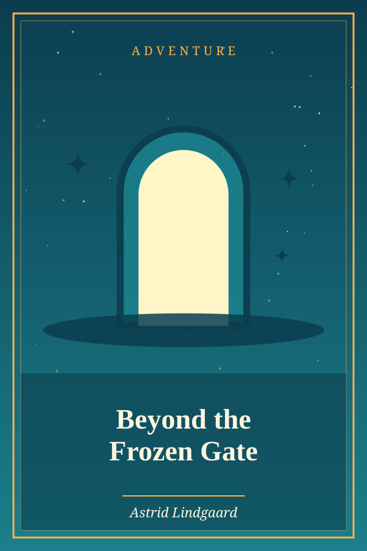
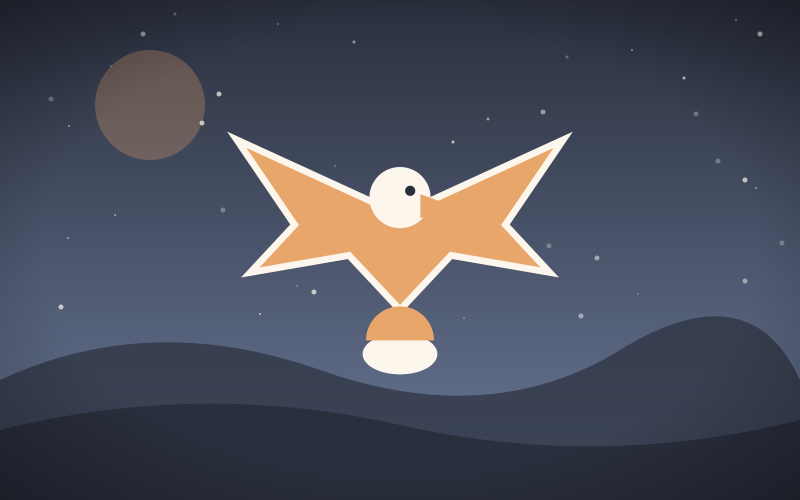

The Tortoise and the Eagle
Genre: Drama
Synopsis
A tortoise who longs to fly strikes a deal with an eagle that she lives to regret.
Chapter 1: The Tortoise and the Eagle

A Tortoise, lazily basking in the sun, complained to the sea-birds of her hard fate, that no one would teach her to fly. An Eagle, hovering near, heard her lamentation and demanded what reward she would give him if he would take her aloft and float her in the air. “I will give you,” she said, “all the riches of the Red Sea.” “I will teach you to fly then,” said the Eagle; and taking her up in his talons he carried her almost to the clouds suddenly he let her go, and she fell on a lofty mountain, dashing her shell to pieces. The Tortoise exclaimed in the moment of death: “I have deserved my present fate; for what had I to do with wings and clouds, who can with difficulty move about on the earth?”
If men had all they wished, they would be often ruined.